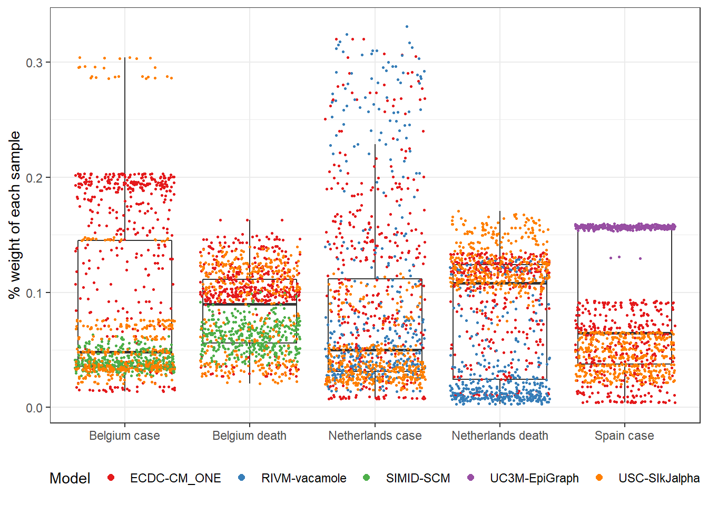
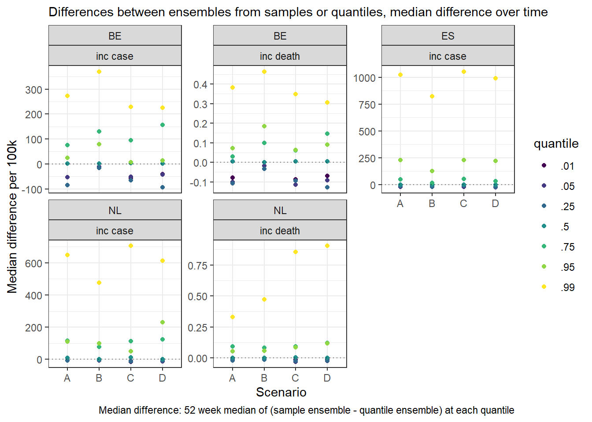
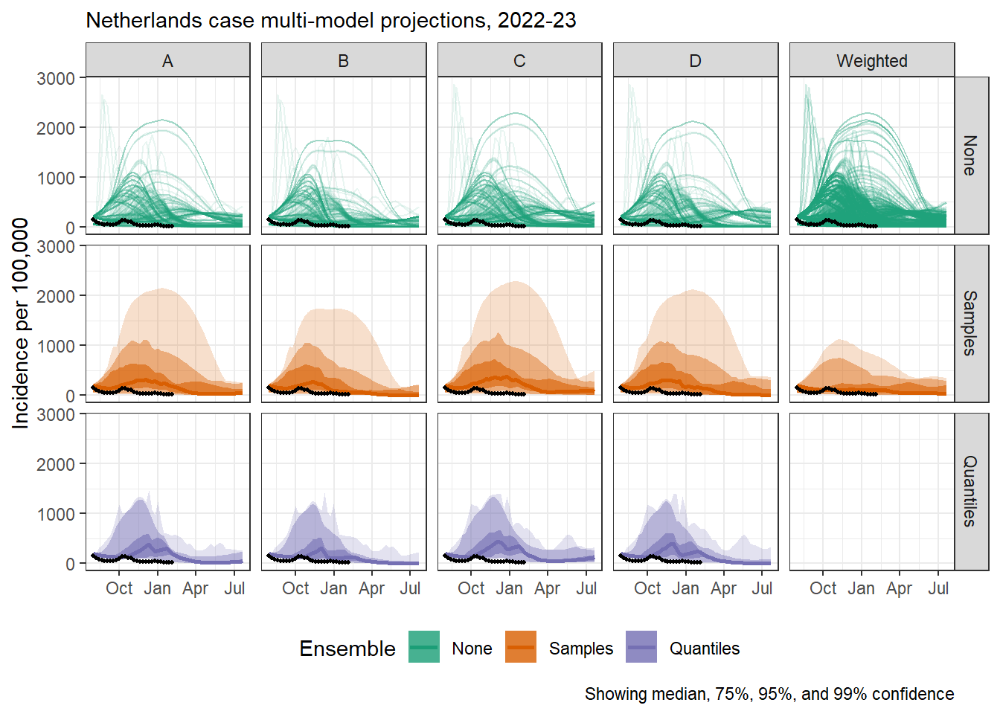
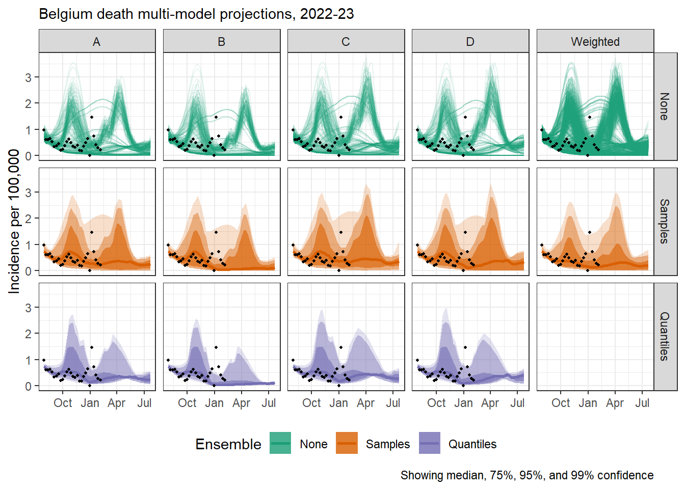
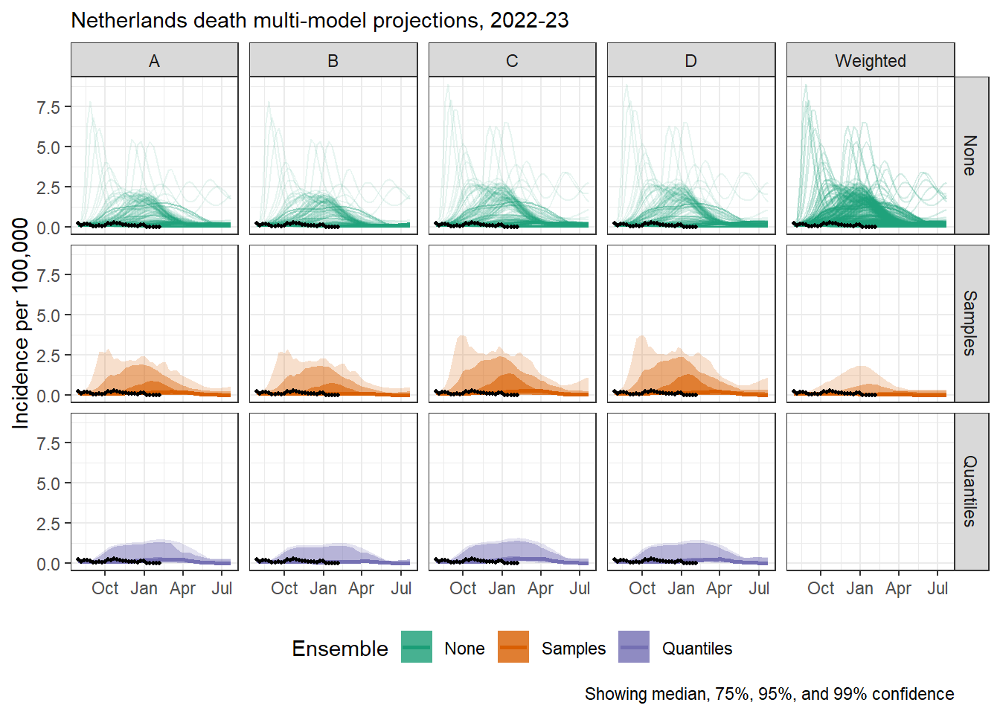

An applied example of information loss due to categorising uncertainty in epidemic modelling
Background
Scenario modelling aims to bound the uncertainty around some future outcome over some time frame. This is important for both understanding and acting upon systems with complex cause and effect dynamics, including outbreaks of infectious disease. Scenario modelling is a source of information on epidemic dynamics: trajectories of continuous incidence; and epidemic characteristics: peaks, turning points, cumulative burden (final outbreak size).
From a methodological perspective, the process of modelling is making choices about how to reduce and simplify a system in order to represent it. This comes with various forms of uncertainty, classifiable into either epistemic (unmeasurable uncertainty about the nature of the system) or aleatoric (stochastic, or random, uncertainty associated with imperfect measurement). In practice, modellers take decisions about how their model is structured (handling epistemic uncertainty) and processes observed data (managing stochastic uncertainty), with a diverse variety of approaches and methods in constant development. This results in a range of valid decisions, and we can compare the effect of these decisions by comparing across outputs produced by different models.
In order to perform any comparison, model outputs must be in a standardised format. One method of doing this is to specify a set of probabilities which modellers then assign values to, for example by counting the frequency of occurence.
- Collaborative modelling and ensembles
- Comparing across models shows not only results but range of uncertainty
- Infectious disease modelling hubs for forecasting and scenario projections
- Two steps to combining information from multiple models:
- Create direct like for like comparisons of modelling results, through data harmonisation - standardised parameters and standardised format for representing modelling results
- Summarise across models, using ensemble methods (as in other fields like climate / CMIP)
- Information loss in the representation of uncertainty in infectious disease hubs
- Hubs collect quantiles from each model because it’s resource efficient
- This necessarily creates some information loss (similar to binned/categorical measures)
- We haven’t yet explored what information loss this creates or how this impacts the aim of the collaborations:
- To provide information on epidemics
- To summarise uncertainty across multiple models
- To evaluate models and reduce uncertainty over time given observed data
Aims
We set up a scenario modelling collaboration to inform long term COVD-19 management in Europe. In collaboration with a policy team at the European Centre for Disease Prevention and Control, multiple modelling teams provided model outputs arising from a range of standardised scenarios designed to inform policy management.
Here we aim to demonstrate what information is lost in the process of summarising model output in quantiles when contributing to a multi-model epidemic modelling hub, in terms of:
- Key epidemic characteristics
- Summarising uncertainty using an ensemble
- Exploring performance against observed data
Methods
Background to setting scenarios and collection of samples - open Hub, scenarios co-created between ECDC and modellers - Projections using any method, up to 1 year for any of 32 countries - Round 2 scenarios with 3 models
- Epidemic characteristics
- selection of frequently reported and policy relevant characteristics
- Aggregation in order to summarise uncertainty across multiple models: difference in ensembles from raw samples vs from quantiles
- Create unweighted median ensemble of models from all sample
- Take quantiles from raw samples for each model; then unweighted median ensemble from the collection of quantiles
- Compare differences in information shown by ensembles A and B., for each across multiple scenarios and locations.
- Weighting samples by performance
- Mean absolute error for each sample: average for each sample trajectory of comparison to observed data at each available time point. Truncated by 2 weeks
- Differences between scenarios ignored: all samples treated as equal probability
- Inverse MAE for each sample used as a weight in a median ensemble (Harrel Davis weighted estimator)
Results
We collected 3 models for each of five targets: reported COVID-19 cases in Spain, the Netherlands, Belgium; and deaths in the Netherlands and Belgium. In total we received 296 sample trajectories for each target.
Result 1: Raw samples allow for number of peaks and cumulative burden
We calculated the cumulative incidence of each trajectory and compared this to the previous 52 weeks’ cumulative total.
- Peaks
- Turning points (timing of peak)
- Final outbreak size / cumulative burden

The forecasting performance of each sample varied substantially between both models and targets (figure #). When weighted by inverse MAE, no sample received more than 0.33% weight (among n=1184 samples for each target). Weighting across samples was heavily skewed for some targets, for example cases in Spain and Belgium with a cluster of highly weighted predictive samples each from one model. Meanwhile, multiple models had highly predictive samples, for example two models with similarly performing samples in the
Weights were more uniform across samples’ forecast performance for deaths in the Netherlands and Belgium (with a median weight of 0.1% and 0.09% respectively across samples).
[[1]]
[[2]]
[[3]]
[[4]]
[[5]]
Figure #. Comparison of 100 samples, an ensemble of samples, an ensemble of quantiles, and a weighted ensemble of samples weighted by six month performance against observed data
Discussion
Summary of results
Strengths of using samples:
- Samples show trajectory shapes, peaks, and cumulative burdens
- Weighting only possible from samples - samples can continue to be used, quantiles are one-off results
Limitations
- Simple ensemble still doesn’t solve the problem of combining multiple shapes in one epidemic curve
We collected three models for five targets in Spain, the Netherlands, and Belgium. Data reporting quality varied substantially between these targets. However, assuming all models had access to the same data sources, our conclusions with respect to the process of reducing samples to quantiles remain valid.
Scenarios offer a way to explore epistemic uncertainty by explicitly varying assumptions about system characteristics. However, the reduction of model outputs to quantile probabilities limits this possibility.
- Conclusions and recommendations
- Depends what the focus + longevity of the project is:
- Little difference (i.e. little information is lost) if the focus is one-off, or only on the central estimates
- Samples better if focus is long-term use of one set of results, on peaks and cumulative sizes, or on outer bounds of uncertainty
- Further work
- Number of samples to collect from each model
- Ensemble by shape of epidemic curve